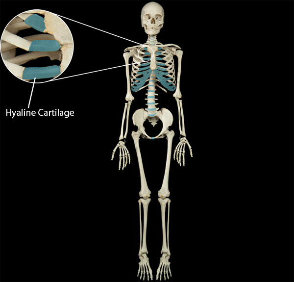

Synchondrosis Joints
Synchondrosis joints are made up of two bones connected by hyaline cartilage. These joints are stationary in nature as they allow very little or no movement to transpire. Some examples of synchondrosis joints are the epiphyseal growth plates and the sternocostal joint between the first rib and the sternum. Most synchondroses, such as the epiphyseal growth plates, are converted to bone before an individual reaches adulthood. However, the sternocostal joint is an example of a joint which remains in its original state throughout the lifespan.
